Simplex Derivatives
Analytical Normals and Tangents
- Add derivative data to noise samples.
- Derive tangents and normals from derivatives.
- Calculate derivatives for simplex noise.
- Create a smooth turbulence variant.
This is the second tutorial in a series about pseudorandom surfaces. In it we will calculate derivatives of simplex noise and use them to generate normal and tangent vectors.
This tutorial is made with Unity 2020.3.35f1.
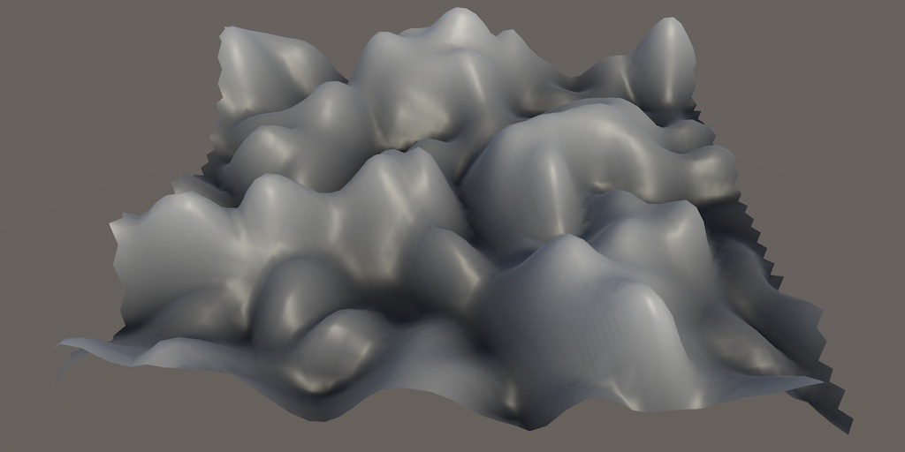
Simplex Noise
We can ask Unity to recalculate normal and tangent vectors, but this isn't a perfect approach. Recalculation requires a complete mesh and thus has to wait until all Burst jobs have finished and takes place on the main thread. Also, recalculating tangents requires UV coordinates and takes a long time.
It would be much better if normals and tangents could be generated directly by SurfaceJob. This is possible by relying on the derivatives of the noise function, so we're going to calculate those derivatives ourselves. As simplex noise has the simplest derivatives we'll begin with that noise type.
Noise Configuration
We'll work our way up from one to three dimensions, and also from the simpler simplex value noise to the more complex simplex gradient noise. Let's reintroduce a noise selection configuration option for this, like we made in the Pseudorandom Noise series.
Create a SurfaceJobScheduleDelegate type for the SurfaceJob.ScheduleParallel method. As it doesn't belong to a specific noise type it must exist outside the generic SurfaceJob so let's put it directly below it in the same file.
public struct SurfaceJob<N> : IJobFor where N : struct, INoise { … }
public delegate JobHandle SurfaceJobScheduleDelegate (
Mesh.MeshData meshData, int resolution, Settings settings, SpaceTRS domain,
float displacement, JobHandle dependency
);
Before we add a second static jobs array to ProceduralSurface refactor rename the jobs array to meshJobs for clarity.
static AdvancedMeshJobScheduleDelegate[] meshJobs = { … };
Then add a two-dimensional array of surface job delegates for all three dimensions of regular simplex and simplex value noise, along with a noise type and dimensions configuration option, matching the apporach used in the Pseudorandom Noise series.
static SurfaceJobScheduleDelegate[,] surfaceJobs = {
{
SurfaceJob<Simplex1D<Simplex>>.ScheduleParallel,
SurfaceJob<Simplex2D<Simplex>>.ScheduleParallel,
SurfaceJob<Simplex3D<Simplex>>.ScheduleParallel
},
{
SurfaceJob<Simplex1D<Value>>.ScheduleParallel,
SurfaceJob<Simplex2D<Value>>.ScheduleParallel,
SurfaceJob<Simplex3D<Value>>.ScheduleParallel
}
};
public enum NoiseType {
Simplex€, SimplexValue
}
[SerializeField]
NoiseType noiseType;
[SerializeField, Range(1, 3)]
int dimensions = 1;
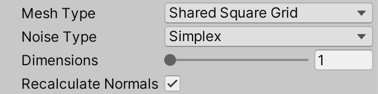
Now adjust GenerateMesh so it schedules the configured surface job.
//SurfaceJob<Lattice2D<LatticeNormal, Perlin>>.ScheduleParallel(surfaceJobs[(int)noiseType, dimensions - 1]( meshData, resolution, noiseSettings, domain, displacement, meshJobs[(int)meshType]( mesh, meshData, resolution, default, new Vector3(0f, Mathf.Abs(displacement)), true ) ).Complete();
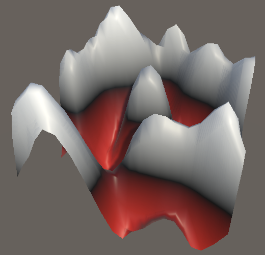
Noise Derivative Data
In order to work with the derivatives of the noise we have to change our noise code so it provides this data along with the noise values.
Vectorized Noise Sample
Each time we sample the noise function we get a value. Now we also want to get the value of the derivatives of that function. But a single derivative value isn't enough, because our noise function can have up to three dimensions, and thus the noise function could have a derivative is each of those dimensions. So each noise sample must contain four values, all of which are vectorized. We'll introduce a new Noise.Sample4 struct type for this, which we put in a new Noise.Sample partial class asset file in the Noise folder. Begin by only including a field for the sample value that we already provide, simply naming it v for value.
using Unity.Mathematics;
using static Unity.Mathematics.math;
public static partial class Noise {
public struct Sample4 {
public float4 v;
}
}
Let's give it an implicit cast operator from float4 to Sample4, simply passing along the value. This makes sense because the derivative of a constant is zero.
public static implicit operator Sample4 (float4 v) => new Sample4 { v = v };
Interface Adjustment
Now we can upgrade our noise by changing the return type of INoise.GetNoise4 to Sample4.
public interface INoise {
Sample4 GetNoise4 (float4x3 positions, SmallXXHash4 hash, int frequency);
}
We also have to change the implementations of this method to match. I only show this once, but it has to be done for all INoise structs.
[MethodImpl(MethodImplOptions.AggressiveInlining)]
public Sample4 GetNoise4(float4x3 positions, SmallXXHash4 hash, int frequency) { … }
This change will result in compiler errors where GetNoise4 is invoked. Fix these by accessing the value of the sample.
….GetNoise4(…).v…
Derivative Data
Let's now expand our Sample4 data to also include the derivatives. If there were only a single derivative function then we could suffice with adding a single extra field, which we could name dv, standing for the delta of the value, indicating how fast it changes.
public float4 v, dv;
But because our noise can vary in up to three dimensions there are three such values. We'll name them dx, dy, and dz.
public float4 v, dx, dy, dz;
Derivative Math
We already know that the derivatives of values can be added just like the values themselves. Mathematically, we can say if `f(x)=g(x)+h(x)` then `f'(x)=g'(x)+h'(x)`.
Thus we have a well-defined addition for our Sample4 type, so let's give it a custom addition operator method.
public static Sample4 operator + (Sample4 a, Sample4 b) => new Sample4 {
v = a.v + b.v,
dx = a.dx + b.dx,
dy = a.dy + b.dy,
dz = a.dz + b.dz
};
And the same goes for subtraction.
public static Sample4 operator - (Sample4 a, Sample4 b) => new Sample4 {
v = a.v - b.v,
dx = a.dx - b.dx,
dy = a.dy - b.dy,
dz = a.dz - b.dz
};
Scaling also applies to the derivative normally. We can see this mathematically via `2f(x)=f(x)+f(x)` thus `(2f(x))'=f'(x)+f'(x)=2f'(x)`.
So let's add multiplication methods for Sample4 and float4 operands and the other way around.
public static Sample4 operator * (Sample4 a, float4 b) => new Sample4 {
v = a.v * b,
dx = a.dx * b,
dy = a.dy * b,
dz = a.dz * b
};
public static Sample4 operator * (float4 a, Sample4 b) => b * a;
And let's also add a method to support division by a float4, because `f(x)/2=1/2f(x)`.
public static Sample4 operator / (Sample4 a, float4 b) => new Sample4 {
v = a.v / b,
dx = a.dx / b,
dy = a.dy / b,
dz = a.dz / b
};
We won't add an operator for division with a sample, nor for sample-sample multiplication, because those are more complicated and not something that we currently need.
Fractal Noise Method
We currently have two jobs that both contain code for a fractal noise loop. Let's consolidate them into a single static generic Noise.GetFractalNoise method that returns the fractal sample. Use the relevant code from SurfaceJob.Execute.
using System;
using System.Runtime.CompilerServices;
…
public static partial class Noise {
…
public interface INoise {
Sample4 GetNoise4 (float4x3 positions, SmallXXHash4 hash, int frequency);
}
[MethodImpl(MethodImplOptions.AggressiveInlining)]
public static Sample4 GetFractalNoise<N> (
float4x3 position, Settings settings
) where N : struct, INoise {
//float4x3 position = domainTRS.TransformVectors(transpose(positions[i]));
var hash = SmallXXHash4.Seed(settings.seed);
int frequency = settings.frequency;
float amplitude = 1f, amplitudeSum = 0f;
float4 sum = 0f;
for (int o = 0; o < settings.octaves; o++) {
sum += amplitude * default(N).GetNoise4(position, hash + o, frequency).v;
amplitudeSum += amplitude;
frequency *= settings.lacunarity;
amplitude *= settings.persistence;
}
//noise[i] = sum / amplitudeSum;
return sum / amplitudeSum;
}
…
}
Noise.Job.Execute can then be reduced to a single assignment.
public void Execute (int i) => noise[i] = GetFractalNoise<N>( domainTRS.TransformVectors(transpose(positions[i])), settings ).v;
And SurfaceJob.Execute can also be simplified.
public void Execute (int i) {
Vertex4 v = vertices[i];
//…
float4 noise = GetFractalNoise<N>(
domainTRS.TransformVectors(transpose(float3x4(
v.v0.position, v.v1.position, v.v2.position, v.v3.position
))),
settings
).v * displacement;
//noise *= displacement;
v.v0.position.y = noise.x;
v.v1.position.y = noise.y;
v.v2.position.y = noise.z;
v.v3.position.y = noise.w;
vertices[i] = v;
}
Now we can make GetFractalNoise return a proper sample by changing the type of the sum and accumulating the entire samples.
Sample4 sum = default;
for (int o = 0; o < settings.octaves; o++) {
sum += amplitude * default(N).GetNoise4(position, hash + o, frequency); //.v;
amplitudeSum += amplitude;
frequency *= settings.lacunarity;
amplitude *= settings.persistence;
}
Adjust the type of noise in SurfaceJob.Execute as well.
Sample4 noise = GetFractalNoise<N>( … ) * displacement;//.v * displacement;v.v0.position.y = noise.v.x; v.v1.position.y = noise.v.y; v.v2.position.y = noise.v.z; v.v3.position.y = noise.v.w;
Analytical Tangents
The tangent vectors of the mesh can be derived for the analytical noise derivatives of the X dimension. The X derivative represents the rate of change per unit along X. As we use the noise to offset the Y position this derivative represents the elevation change. Thus we have a 2D vector `t=[[1],[d_x]]` where `d_x` is the X derivative, which we can expand to a tangent vector. Let's initially do this only for the first out of four vertices.
v.v3.position.y = noise.v.w; v.v0.tangent = float4(1f, noise.dx.x, 0f, -1f); vertices[i] = v;
To make this a proper tangent vector it has to be normalized. Explicitly for our vector, `||t||=[[1],[d_x]]1/sqrt(d_x^2+1)`. If we extract the normalizer factor we can directly use it for the X component of the vector.
float4 normalizer = rsqrt(noise.dx * noise.dx + 1f); float4 tangentY = noise.dx * normalizer; v.v0.tangent = float4(normalizer.x, tangentY.x, 0f, -1f);
Expand this approach to set the tangents of all four vertices.
v.v0.tangent = float4(normalizer.x, tangentY.x, 0f, -1f); v.v1.tangent = float4(normalizer.y, tangentY.y, 0f, -1f); v.v2.tangent = float4(normalizer.z, tangentY.z, 0f, -1f); v.v3.tangent = float4(normalizer.w, tangentY.w, 0f, -1f);
If we disable the recalculation options of our procedural mesh we'll now see it use tangent vectors derived from analytical derivatives instead of a mesh-based approximation. But because all derivative data is still zero at this point all tangent vectors will be flat.
1D Derivatives
We begin with 1D noise so we only have to worry about a single dimension.
Simplex Value Noise
Let's initially consider simplex value noise. Because its gradient is a constant value and derivatives can be added, we only have to consider the individual kernel falloff function `f(x)=(1-x^2)^3` scaled by some value that is constant per kernel. Adjust Simplex1D.Kernel so it returns this as a Sample4. Use `(1-x^2)` as the base function and raise it to the third power and scale it when setting the sample value.
static Sample4 Kernel (SmallXXHash4 hash, float4 lx, float4x3 positions) {
float4 x = positions.c0 - lx;
float4 f = 1f - x * x;
//f = f * f * f;
float4 g = default(G).Evaluate(hash, x);
return new Sample4 {
v = f * f * f * g
};
}
By applying the chain rule we find `f'(x)=-6x(1-x^2)^2`. Use that to set the X derivative, also scaling it by the same gradient, which we consider to be constant.
return new Sample4 {
v = f * f * f * g,
dx = f * f * -6f * x * g
};
At this point we again get a compilation error, because EvaluateCombined expects a float4 argument. Change the IGradient.EvaluateCombined interface method declaration so it acts on a Sample4 instead.
Sample4 EvaluateCombined (Sample4 value);
Adjust all the gradient implementations to match. This is trivial for all gradients except the Turbulence variant.
public Sample4 EvaluateCombined (Sample4 value) => value;
Turbulence takes the absolute value of the noise. We'll deal with this later, simply pass through the unadjusted sample for now.
public Sample4 EvaluateCombined (Sample4 value) =>//abs(default(G).EvaluateCombined(value));default(G).EvaluateCombined(value);
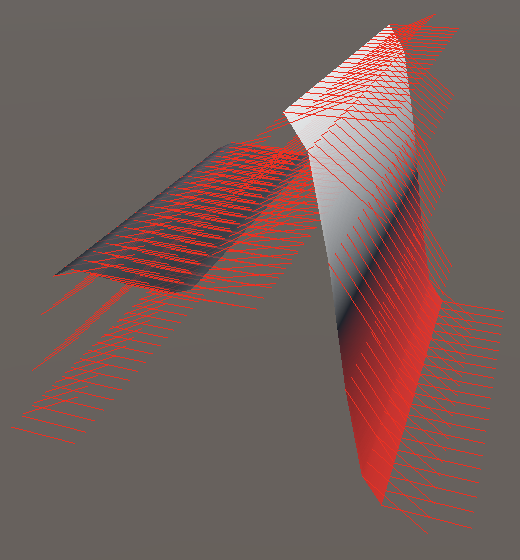
We finally get to see analytical tangent vectors. However, they are incorrect unless the frequency is set to 1. This happens because the frequency acts like a scalar for the rate of change of the noise. Effectively, if the frequency is set to 4 we're using `f(g(x))` with `g(x)=4x` and have to apply the chain rule.
So to fix this Simplex1D.GetNoise4 has to factor the frequency into its derivative.
Sample4 s = default(G).EvaluateCombined( Kernel(hash.Eat(x0), x0, positions) + Kernel(hash.Eat(x1), x1, positions) ); s.dx *= frequency; return s;
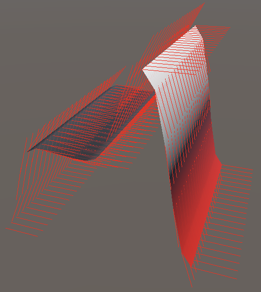
Because derivatives can be added the tangents are also correct when multiple octaves of noise are added.
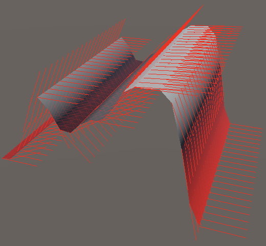
Note that because the analytical tangent vectors are based on the noise and not the mesh they might become weird when the frequency becomes too high relative to the mesh resolution, or when there are too many octaves. Recalculated mesh-based tangents will automatically conform to the mesh surface, but the analytical tangents won't. This shouldn't be a problem because in such cases the noise pattern gets under-sampled anyway and result will be bad.
Simplex Noise
If we switch to simplex noise the tangents will be wrong again, because we assumed that the gradients are constant, which is only true for simplex value noise.
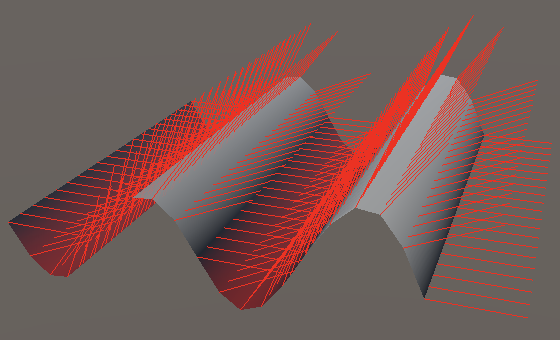
Gradients have derivatives as well, so change the IGradient interface so all Evaluate methods return Sample4 values.
Sample4 Evaluate (SmallXXHash4 hash, float4 x); Sample4 Evaluate (SmallXXHash4 hash, float4 x, float4 y); Sample4 Evaluate (SmallXXHash4 hash, float4 x, float4 y, float4 z);
Adjust all implementations to match and fix all compiler errors by extracting the sample values from the Evaluate invocations.
The 1D simplex gradient forwards its invocation to BaseGradients.Line, only scaling the result. So we'll adjust that method, making it return a Sample4 value. Our straight line is simply the function `f(x)=lx` where `l` is some constant that we base on the hash, thus `f'(x)=l`. Adjust Line to return both.
public static Sample4 Line (SmallXXHash4 hash, float4 x) {
float4 l =
(1f + hash.Floats01A) * select(-1f, 1f, ((uint4)hash & 1 << 8) == 0);
return new Sample4 {
v = l * x,
dx = l
};
}
With the gradient no longer constant the function in Simplex1D.Kernel becomes `f(x)=(1-x^2)^3g(x)`. By applying the product rule we find that `f'(x)=(1-x^2)^2((1-x^2)g'(x)-6xg(x))`.
Sample4 g = default(G).Evaluate(hash, x);//.v;return new Sample4 { v = f * f * f * g.v, dx = f * f * (f * g.dx - 6f * x * g.v) };
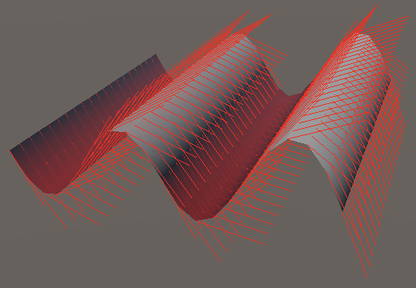
We can simplify the code a bit by multiplying the entire sample with `(1-x^2)^2`.
return new Sample4 {
v = f * g.v,
dx = f * g.dx - 6f * x * g.v
} * f * f;
Analytical Normals
Now that we have correct derivatives for simplex noise let's also use them to generate the normal vectors in SurfaceJob.Execute. Because we're only dealing with one dimension we can currently suffice with rotating the tangent vector 90° counterclockwise.
v.v0.tangent = float4(normalizer.x, tangentY.x, 0f, -1f); v.v1.tangent = float4(normalizer.y, tangentY.y, 0f, -1f); v.v2.tangent = float4(normalizer.z, tangentY.z, 0f, -1f); v.v3.tangent = float4(normalizer.w, tangentY.w, 0f, -1f); v.v0.normal = float3(-v.v0.tangent.y, v.v0.tangent.x, 0f); v.v1.normal = float3(-v.v1.tangent.y, v.v1.tangent.x, 0f); v.v2.normal = float3(-v.v2.tangent.y, v.v2.tangent.x, 0f); v.v3.normal = float3(-v.v3.tangent.y, v.v3.tangent.x, 0f);
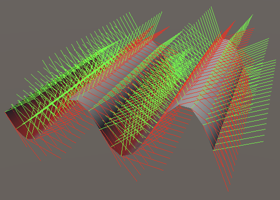
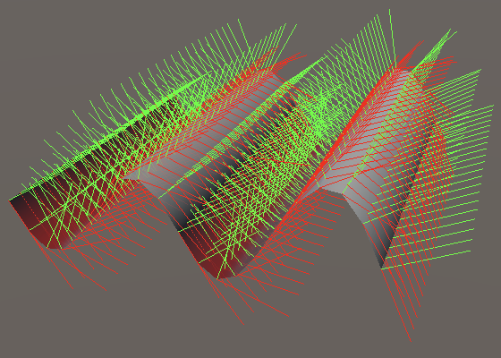
There will almost always be a difference between analytical and recalculated normals and tangents, but the higher the resolution of the mesh the more they look alike. The difference is most obvious when under-sampling the noise.
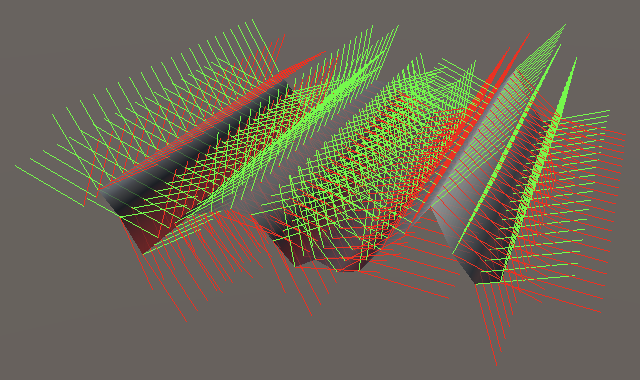
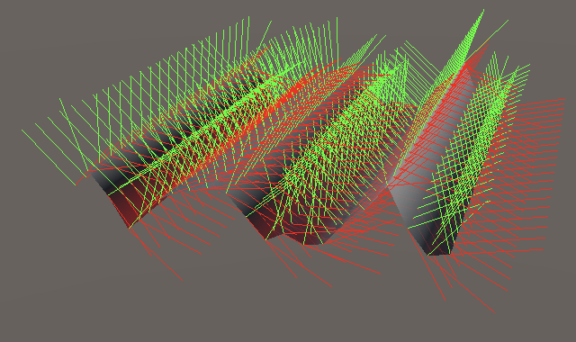
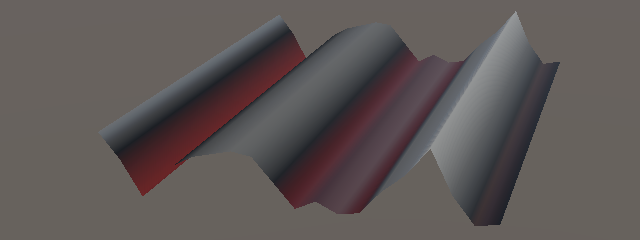
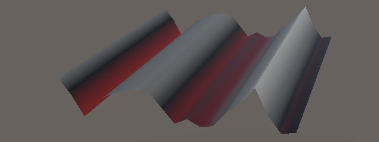
Domain Rotation
Our analytical normal and tangent vectors should also correctly adapt to domain rotation, but this is currently not the case. This can be verified by applying a 90° domain rotation around the Y axis. The tangents should become flat and the normals should have also rotated, but this doesn't happen.
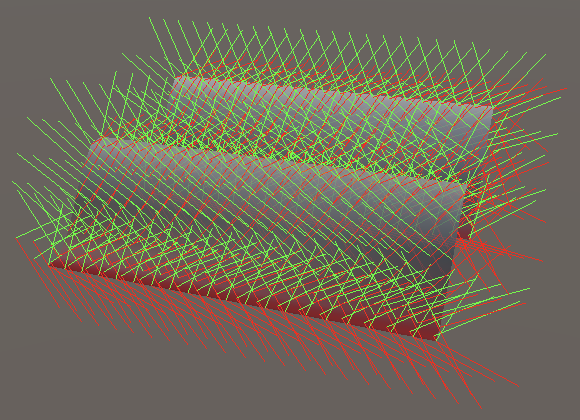
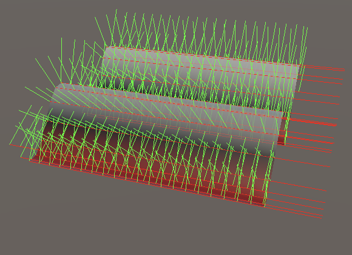
The noise code is unaware of the transformation. This isn't a problem for translation, because that simply shifts the sample position. But in the case of rotation we have to compensate by applying the inverse rotation to the derivative vector.
To apply a rotation we need a 3×3 matrix, constructed by rotating in the opposite direction and in reverse order of the domain rotation. So we need a negative YXZ rotation. We can construct such a matrix via float3x3.EulerYXZ and let's provide it via a new SpaceTRS.DerivativeMatrix property.
public float3x3 DerivativeMatrix => float3x3.EulerYXZ(-math.radians(rotation));
To apply this matrix to vectorized derivatives add a variant TransformVectors method to MathExtensions that acts on a 3×3 matrix instead of on a 3×4 matrix.
public static float4x3 TransformVectors (this float3x3 m, float4x3 v) => float4x3( m.c0.x * v.c0 + m.c1.x * v.c1 + m.c2.x * v.c2, m.c0.y * v.c0 + m.c1.y * v.c1 + m.c2.y * v.c2, m.c0.z * v.c0 + m.c1.z * v.c1 + m.c2.z * v.c2 );
Let's also add a convenient Sample4.Derivatives property that provides the derivatives as a vectorized float4x3 package.
public float4x3 Derivatives => float4x3(dx, dy, dz);
Now add a field for the derivative matrix to SurfaceJob and set it in ScheduleParallel.
float3x3 derivativeMatrix;
…
public static JobHandle ScheduleParallel (…) => new SurfaceJob<N>() {
vertices =
meshData.GetVertexData<SingleStream.Stream0>().Reinterpret<Vertex4>(12 * 4),
settings = settings,
domainTRS = domain.Matrix,
derivativeMatrix = domain.DerivativeMatrix,
displacement = displacement
}.ScheduleParallel(meshData.vertexCount / 4, resolution, dependency);
Then transform the derivative vectors of the noise and use the X components of the result to construct the tangent vectors in Execute.
float4x3 dNoise = derivativeMatrix.TransformVectors(noise.Derivatives); float4 normalizer = rsqrt(dNoise.c0 * dNoise.c0 + 1f); float4 tangentY = dNoise.c0 * normalizer;
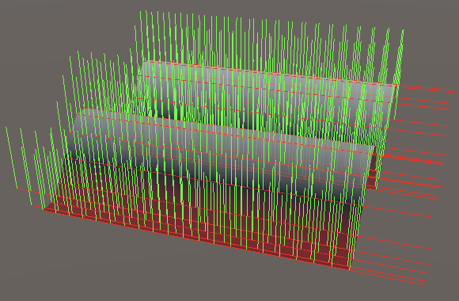
This fixed the tangents. To also construct correct normal vectors we have to switch to a 2D approach, because the derivative vector can now point in any direction in the XZ plane. So it becomes `[[-d_x],[1],[-d_z]]1/sqrt(d_x^2+d_z^2+1)`.
normalizer = rsqrt(dNoise.c0 * dNoise.c0 + dNoise.c2 * dNoise.c2 + 1f); float4 normalX = -dNoise.c0 * normalizer; float4 normalZ = -dNoise.c2 * normalizer; v.v0.normal = float3(normalX.x, normalizer.x, normalZ.x); v.v1.normal = float3(normalX.y, normalizer.y, normalZ.y); v.v2.normal = float3(normalX.z, normalizer.z, normalZ.z); v.v3.normal = float3(normalX.w, normalizer.w, normalZ.w);
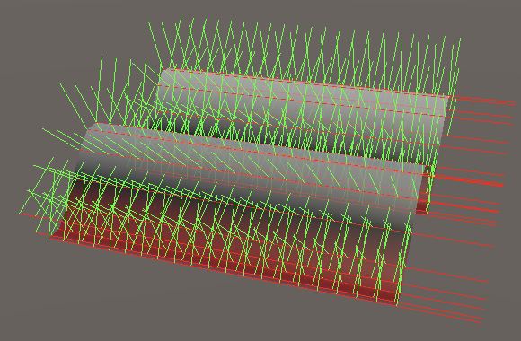
Domain Scale
Domain scaling should also affect the tangent and normal vectors. However, before we deal with that we have to first observe that the float4.TRS method doesn't provide the expected transformation. It scales after rotation, so it does TSR instead of TRS. This doesn't matter when scaling is uniform, but nonuniform scaling goes wrong. To make our domain behave the same way as Unity's game object transformation let's create the matrix provided by SpaceTRS.Matrix ourselves.
public float3x4 Matrix {
get {
//float4x4 m = float4x4.TRS(
// translation, quaternion.EulerZXY(math.radians(rotation)), scale
//);
//return math.float3x4(m.c0.xyz, m.c1.xyz, m.c2.xyz, m.c3.xyz);
float3x3 m = math.mul(
float3x3.Scale(scale), float3x3.EulerZXY(math.radians(rotation))
);
return math.float3x4(m.c0, m.c1, m.c2, translation);
}
}
Now we can observe a combination of nonuniform scaling and rotation, which leads to incorrect analytical tangents and normals.
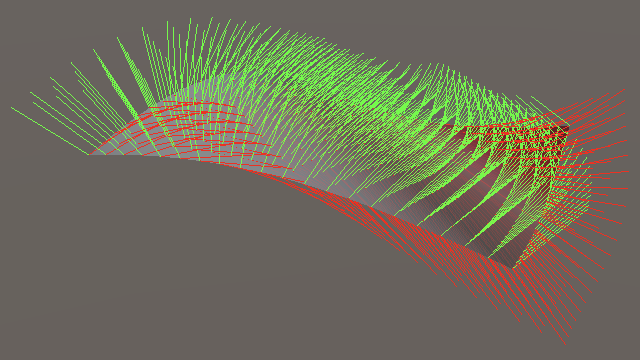
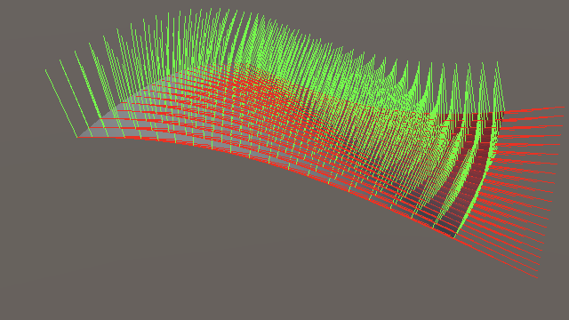
Scaling this way is effectively changing the frequency in each dimension independently, so we should scale the derivatives by the same amount. We have to swap the order of rotation and scaling to arrive at the final derivative matrix.
public float3x3 DerivativeMatrix => math.mul(float3x3.EulerYXZ(-math.radians(rotation)), float3x3.Scale(scale));
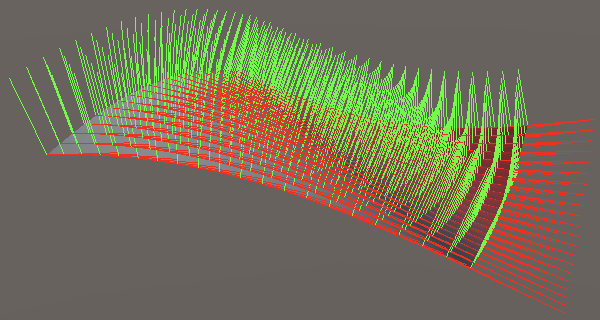
2D Derivatives
Because each dimension has its own derivative they can be calculated separately. So we can use the same approach for 2D noise that we used for 1D noise.
Simplex Value Noise
Adjust Simplex2D.GetNoise4 so it also treats the evaluated kernels as a Sample4 and appropriately scales its two derivatives.
public Sample4 GetNoise4 (float4x3 positions, SmallXXHash4 hash, int frequency) {
positions *= frequency * (1f / sqrt(3f));
…
Sample4 s = default(G).EvaluateCombined(
Kernel(h0.Eat(z0), x0, z0, positions) +
Kernel(h1.Eat(z1), x1, z1, positions) +
Kernel(hC.Eat(zC), xC, zC, positions)
);
s.dx *= frequency * (1f / sqrt(3f));
s.dz *= frequency * (1f / sqrt(3f));
return s;
}
Then change Kernel so it sets its X derivative just like for 1D noise. Besides that, clamp the entire sample so its falloff doesn't go below zero.
static Sample4 Kernel (
SmallXXHash4 hash, float4 lx, float4 lz, float4x3 positions
) {
float4 unskew = (lx + lz) * ((3f - sqrt(3f)) / 6f);
float4 x = positions.c0 - lx + unskew, z = positions.c2 - lz + unskew;
float4 f = 0.5f - x * x - z * z;
//f = f * f * f * 8f;
//return max(0f, f) * default(G).Evaluate(hash, x, z).v;
Sample4 g = default(G).Evaluate(hash, x, z);
return new Sample4 {
v = f * g.v,
dx = f * g.dx - 6f * x * g.v
} * f * f * select(0f, 8f, f >= 0f);
}
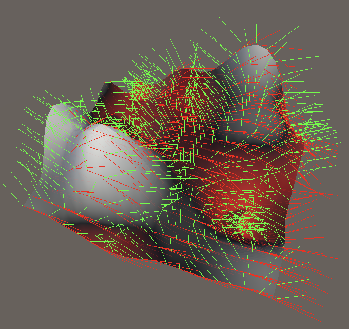
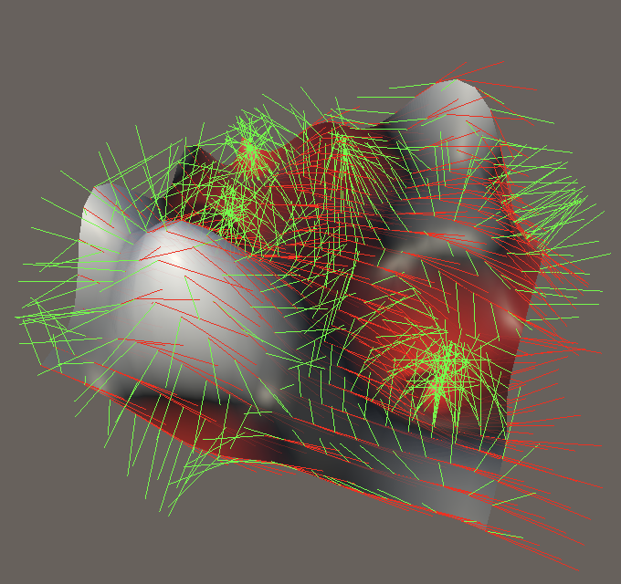
At this point the tangent vectors are already correct if no rotation is applied. This makes sense, because Z is constant in the X dimension. If we ignore the gradient for a moment, we've taken the partial derivative of `f(x,z)=(1/2-x^2-z^2)^3` in the X dimension, which is `f'_x(x,z)=-6x(1/2-x^2-z^2)^2`. After that we can incorporate the gradient via the product rule exactly as we did for 1D noise.
The partial derivative in the Z dimension `f_z'(x,z)` is found the same way, but with `z` variable and `x` constant. Add it to the sample.
return new Sample4 {
v = f * g.v,
dx = f * g.dx - 6f * x * g.v,
dz = f * g.dz - 6f * z * g.v
} * f * f * select(0f, 8f, f >= 0f);
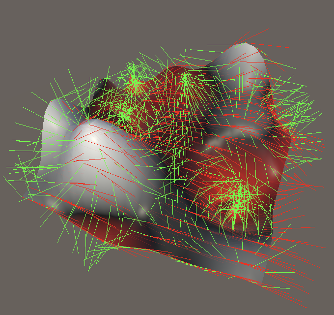
Simplex Gradients
To get correct derivatives for simplex gradient noise we have to make BaseGradients.Circle provide derivatives as well. In this case we have `f(x,z)=ax+by` so the partial derivatives are `f_x'(x,z)=a` and `f_z'(x,z)=b`.
public static Sample4 Circle (SmallXXHash4 hash, float4 x, float4 y) {
float4x2 v = SquareVectors(hash);
return new Sample4 {
v = v.c0 * x + v.c1 * y,
dx = v.c0,
dz = v.c1
} * rsqrt(v.c0 * v.c0 + v.c1 * v.c1);
}
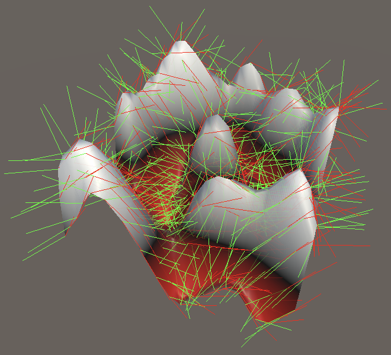
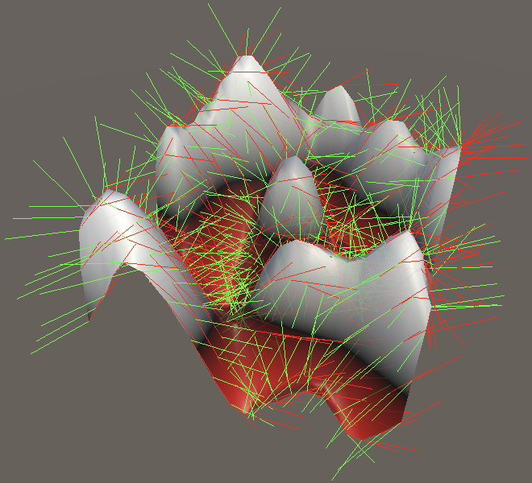
At this point it is easy to illustrate an additional benefit of analytical derivatives. Because recalculated tangents and normals depend on the mesh data, vertices at the edge of the mesh have only partial data to work with, so these vectors will be biased toward the inside of the mesh. The result of this is that when you use separate meshes to tile the surface there will be normal and tangent discontinuities along the seams. The analytical approach does not have this problem.
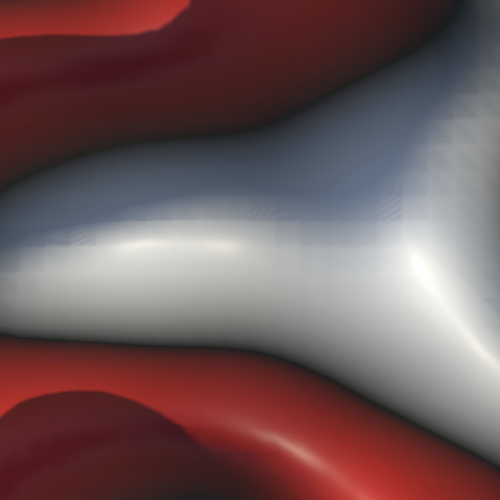
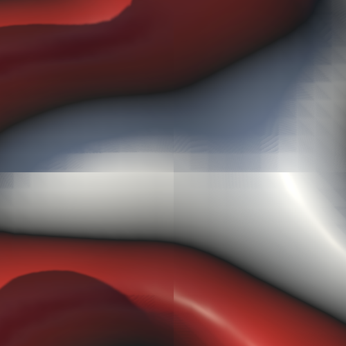
You can see this by putting multiple procedural meshes next to each other and translating their domains so they form a continuous surface.
3D Derivatives
Going from two to three dimensions is as simple as going from one to two.
Simplex Value Noise
First adjust Simplex3D.GetNoise4.
public Sample4 GetNoise4 (float4x3 positions, SmallXXHash4 hash, int frequency) {
positions *= frequency * 0.6f;
…
Sample4 s = default(G).EvaluateCombined(
Kernel(h0.Eat(y0).Eat(z0), x0, y0, z0, positions) +
Kernel(h1.Eat(y1).Eat(z1), x1, y1, z1, positions) +
Kernel(hA.Eat(yCA).Eat(zCA), xCA, yCA, zCA, positions) +
Kernel(hB.Eat(yCB).Eat(zCB), xCB, yCB, zCB, positions)
);
s.dx *= frequency * 0.6f;
s.dy *= frequency * 0.6f;
s.dz *= frequency * 0.6f;
return s;
}
Then change Kernel so it provides all three partial derivatives.
static Sample4 Kernel (
SmallXXHash4 hash, float4 lx, float4 ly, float4 lz, float4x3 positions
) {
…
float4 f = 0.5f - x * x - y * y - z * z;
//f = f * f * f * 8f;
//return max(0f, f) * default(G).Evaluate(hash, x, y, z).g;
Sample4 g = default(G).Evaluate(hash, x, y, z);
return new Sample4 {
v = f * g.v,
dx = f * g.dx - 6f * x * g.v,
dy = f * g.dy - 6f * y * g.v,
dz = f * g.dz - 6f * z * g.v
} * f * f * select(0f, 8f, f >= 0f);
}
This is enough to get correct 3D simplex value noise.
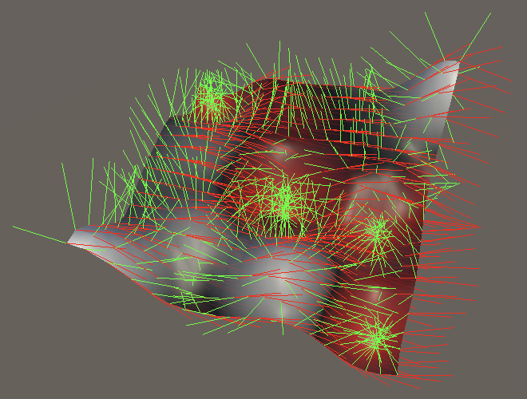
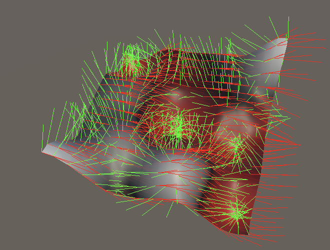
Note that if we do not rotate the domain around the X or Z axes we don't need the derivative in the Y dimension, because we never leave the XZ plane. But when an arbitrary rotation is applied all three derivatives are needed.
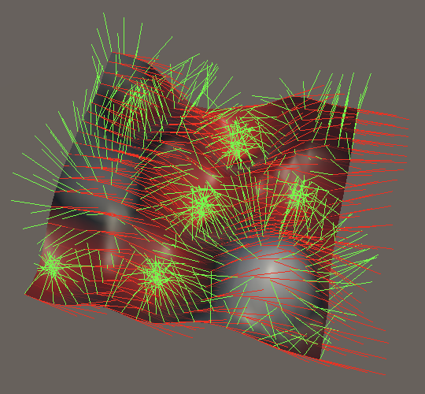
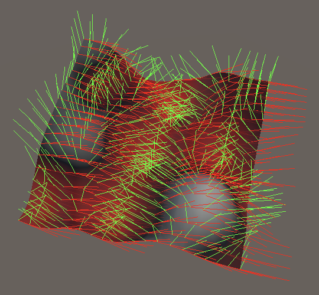
Simplex Gradients
To complete simplex gradient noise we have to add derivatives to BaseGradients.Sphere.
public static Sample4 Sphere (SmallXXHash4 hash, float4 x, float4 y, float4 z) {
float4x3 v = OctahedronVectors(hash);
return new Sample4 {
v = v.c0 * x + v.c1 * y + v.c2 * z,
dx = v.c0,
dy = v.c1,
dz = v.c2
} * rsqrt(v.c0 * v.c0 + v.c1 * v.c1 + v.c2 * v.c2);
}
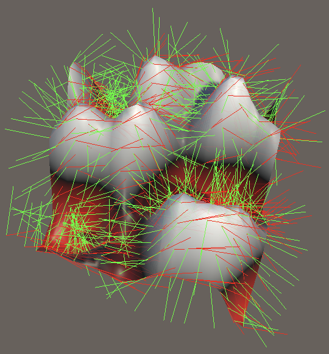
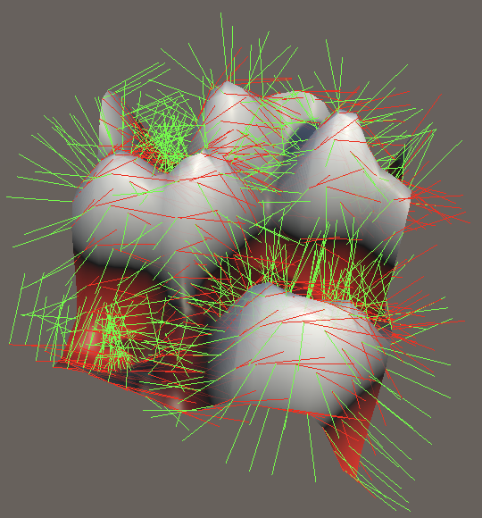
Turbulence
Simplex noise is now complete, but earlier we skipped providing a correct solution for the turbulence variant. We're going to deal with that now.
Derivative of Absolute Function
Let's add a turbulence variant for simplex gradient noise only, leaving out simplex turbulence value noise. Add it to ProceduralSurface.
static SurfaceJobScheduleDelegate[,] surfaceJobs = {
{ … },
{
SurfaceJob<Simplex1D<Turbulence<Simplex>>>.ScheduleParallel,
SurfaceJob<Simplex2D<Turbulence<Simplex>>>.ScheduleParallel,
SurfaceJob<Simplex3D<Turbulence<Simplex>>>.ScheduleParallel
},
{ … }
};
public enum NoiseType {
Simplex€, SimplexTurbulence, SimplexValue
}
Then make Turbulence.EvaluateCombined return the absolute value of the sample, leaving the derivatives unchanged for now.
public Sample4 EvaluateCombined (Sample4 value) {
Sample4 s = default(G).EvaluateCombined(value);
s.v = abs(s.v);
return s;
}
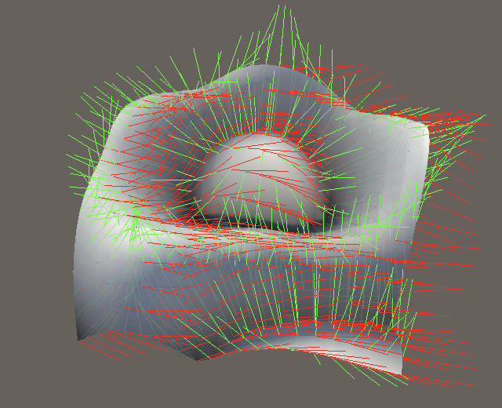
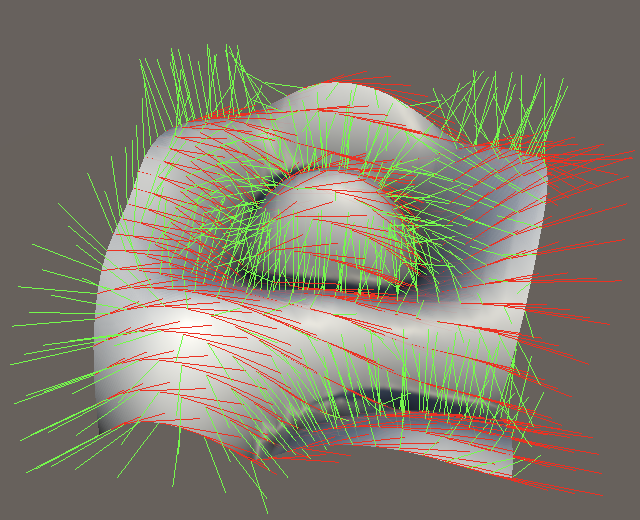
The analytical results are obviously incorrect, because the derivatives are not negated when they should be. This negation is based on the value, not the derivatives themselves.
Sample4 s = default(G).EvaluateCombined(value); s.dx = select(-s.dx, s.dx, s.v >= 0f); s.dy = select(-s.dy, s.dy, s.v >= 0f); s.dz = select(-s.dz, s.dz, s.v >= 0f); s.v = abs(s.v);
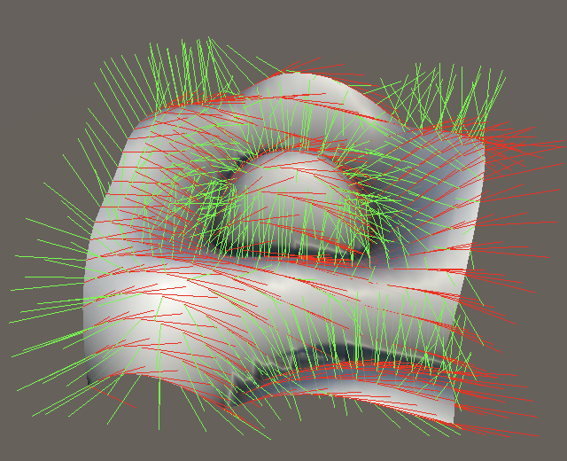
The sign flip of the noise causes a sudden change in direction. We simply pick one option for the derivatives at that point. The recalculated vectors produce smoother results in this case.
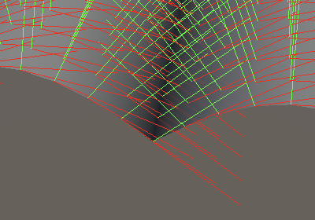
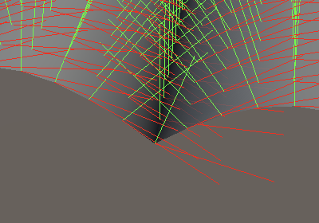
Smoothstep
The sudden sign flip of turbulence noise tends to create ugly jagged seams in the mesh. We could smooth that a bit by applying a different modification. The simplest option would be to use `f(x)=x^2` instead of `f(x)=|x|`, but that would weaken the noise a lot. A better choice would be the smoothstep function `f(x)=3x^2-2x^3` applied on top of turbulence.
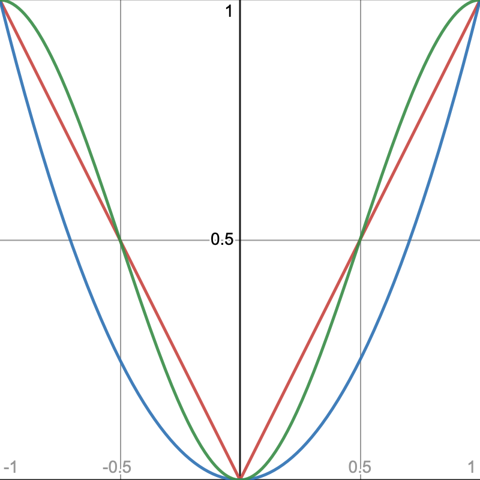
So let's add a Smoothstep gradient modifier to Noise.Gradient. The derivative of `f(x)=3g(x)^2-2g(x)^3` is `f'(x)=6g(x)(1-g(x))g'(x)`.
public struct Smoothstep<G> : IGradient where G : struct, IGradient {
public Sample4 Evaluate (SmallXXHash4 hash, float4 x) =>
default(G).Evaluate(hash, x);
public Sample4 Evaluate (SmallXXHash4 hash, float4 x, float4 y) =>
default(G).Evaluate(hash, x, y);
public Sample4 Evaluate (SmallXXHash4 hash, float4 x, float4 y, float4 z) =>
default(G).Evaluate(hash, x, y, z);
public Sample4 EvaluateCombined (Sample4 value) {
Sample4 s = default(G).EvaluateCombined(value);
float4 d = 6f * s.v * (1f - s.v);
s.dx *= d;
s.dy *= d;
s.dz *= d;
s.v *= s.v * (3f - 2f * s.v);
return s;
}
}
Now adjust ProceduralSurface so it produces a smoothed turbulence variant.
static SurfaceJobScheduleDelegate[,] surfaceJobs = {
{ … },
{
SurfaceJob<Simplex1D<Smoothstep<Turbulence<Simplex>>>>.ScheduleParallel,
SurfaceJob<Simplex2D<Smoothstep<Turbulence<Simplex>>>>.ScheduleParallel,
SurfaceJob<Simplex3D<Smoothstep<Turbulence<Simplex>>>>.ScheduleParallel
},
{ … }
};
public enum NoiseType {
Simplex€, SimplexSmoothTurbulence, SimplexValue
}
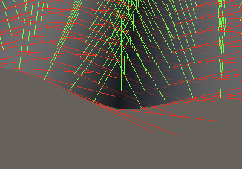
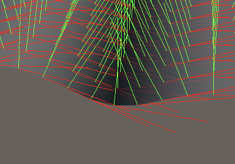
The smoothing flattens the noise when it approaches zero, eliminating the discontinuity of the derivatives. How effective this is depends on the resolution of the mesh relative to the noise frequency. The recalculated results will still be smoother, but the analytical results of the smooth variant can also be acceptable.
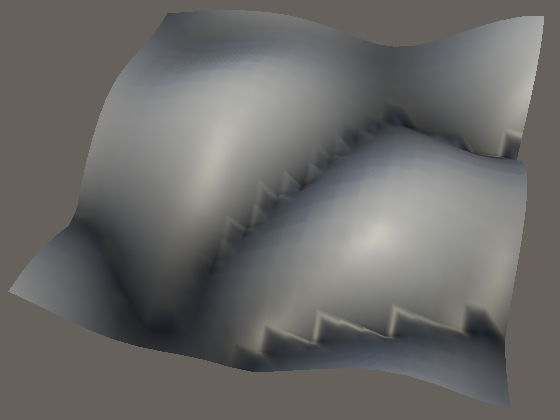
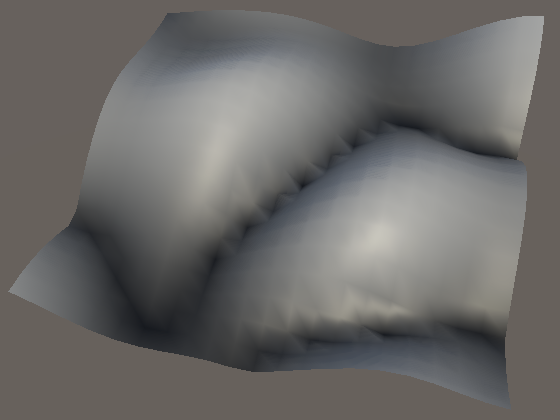
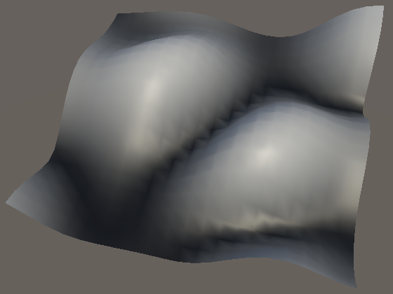
The next tutorial is Perlin derivatives.